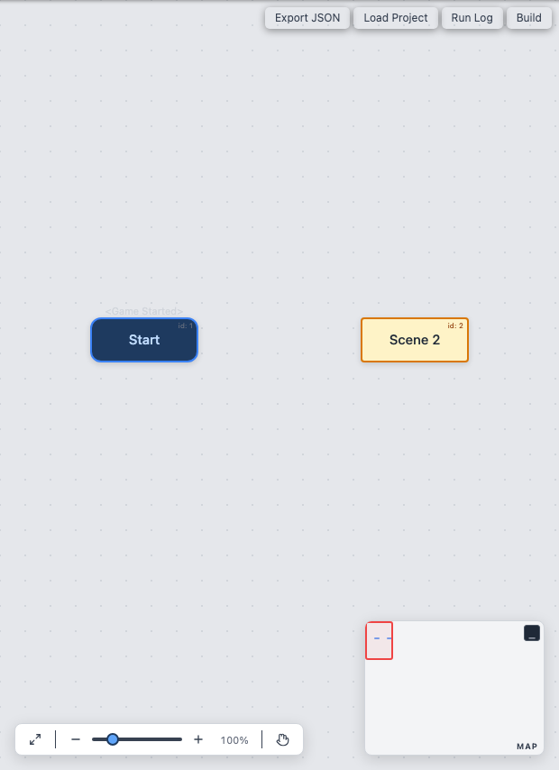
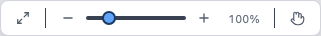
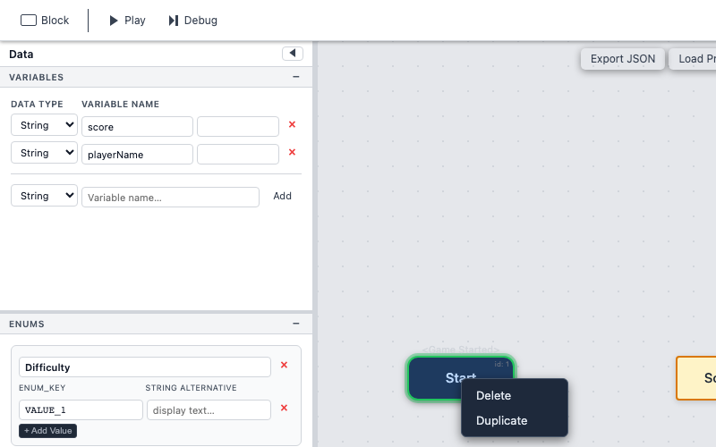

Flowcharts
The flowchart canvas is the central workspace in Son of Fungus. It displays all of your blocks and the connections between them, giving you a bird's-eye view of your project's logic.

Blocks on the Canvas
Each block appears as a card on the canvas. You can drag blocks to rearrange them freely. Selecting a block highlights it and opens its details in the Inspector panel on the right.
Connections between blocks are drawn automatically based on Call and Menu commands. If a Call command targets Block B, a connecting line is drawn from the current block to Block B.
Here is a three-block flowchart with branching:
The event block Start contains a Menu command with two choices, creating arrows to both Forest Path and Mountain Trail.
Zoom Toolbar

A small zoom toolbar sits in the bottom-left corner of the canvas. It provides:
- Zoom In (+) — Increase the canvas scale.
- Zoom Out (-) — Decrease the canvas scale.
- Fit to View — Automatically zoom and pan so that all blocks are visible on screen.
You can also zoom with the mouse scroll wheel or trackpad pinch gesture.
Minimap
The bottom-right corner of the canvas contains a minimap that shows a thumbnail overview of all blocks. The highlighted rectangle indicates the currently visible viewport. Drag the rectangle to quickly navigate large flowcharts.
Right-Click Context Menu

Right-clicking on a block opens a context menu with the following options:
- Delete — Remove the block and all of its commands. Any connections pointing to this block are also removed.
- Duplicate — Create a copy of the block (with a new ID) placed slightly offset from the original.
Dark / Light Theme
Click the cog icon (Settings) in the top toolbar to open the Settings panel. From there you can switch between dark and light canvas themes. The theme affects the canvas background and block colours for comfortable editing in any lighting condition.